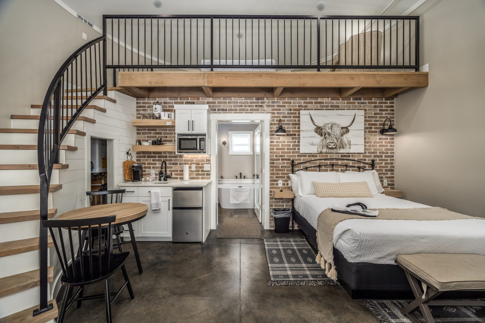
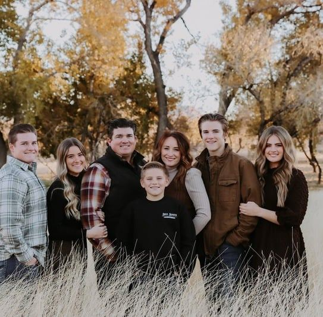

A boutique stay in La Verkin, Utah
A little history.
A lot of comfort.
Thoughtfully reimagined farm stays.
A quieter way to experience Southern Utah.
Rooted in the past.
Ready for your next chapter.
A farm story, made
for a slower stay.
Settle into a thoughtfully designed suite on the historic Church Dairy Farm. Here, original character meets everyday comfort, with the landscapes of Southern Utah waiting just beyond your door.
Get to know Silo SuitesThe stays
A space to call your own.

The historic Church Dairy Farm
Some places have
a story. This one
welcomes you in.
Once a working dairy farm, this land has been part of the Church family's story for generations. Today, its next chapter is a collection of distinctive stays, shaped by the same sense of place.
Honest materials. Thoughtful details. A warm welcome to our corner of Utah.
Come stay a while
Stay & soak
A little adventure.
A long, warm soak.
Stay at Silo Suites. Soak at Zion Canyon Hot Springs. Make time for both sides of a Southern Utah getaway.
Discover Stay & SoakZion Canyon Hot Springs / A regional experience
A few local favourites
Out here, there's
room to wander.
Big landscapes, small-town stops, and a good cup of coffee. A few places we think you'll love, close to your home for the weekend.
Open the local guide